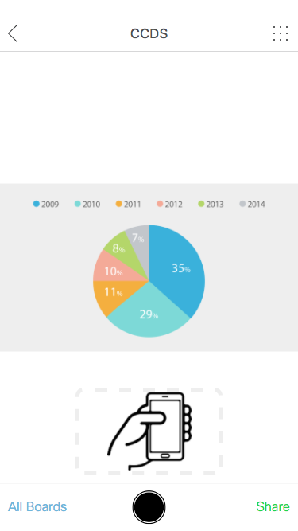

Firebase
We've done some researchs on how to build connection between devices. Web database is one of the choice. In our current projects, we choose Firebase. Firebase saves us a lot of time on coding server end code. So we focus more on the front end coding.
Prototype
Here is demo with Firebase.
Desktop
link
https://uxccds.github.io/SparkMobile/pair/page/wall.html
usage
1) Please use Chrome to open this prototype.
2) Wait for the loading and open the mobile protoype when you see the following screen.

Mobile
link
https://uxccds.github.io/SparkMobile/pair/page/phone.html
usage
1) Use Chrome mobile simulator to view the prototype. You can also install the prototype as web app on your iPhone.

2) Click 'All Boards' to the selection page.
3) Select one board.
4) When you do step 2 and step 3, the desktop prototype will do the same thing automatically.